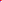

Click the CSS-sized original color image: to navigate.
This DOM text follows a CSS string/image/string prefix.
A generated block image follows this paragraph.

Ordinary and generated images reuse the same decoded pixels; this img owns padding/background/borders.Unavailable generated images leave surrounding CSS text intact.